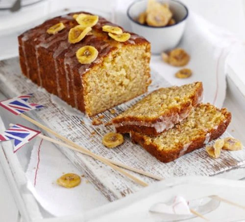

Banana Cake

Description
The ultimate classic cocktail is stirred, not shaken. Serve your martini with a twist of lemon, or an olive.
Ingredients
- 2 large eggs
- 3 large ripe bananas
- 280g plain flour
- 50g pecans, roughly chopped
- 1 tbps baking powder
Steps
-
Preheat the oven to fan 160C/ conventional 180C/gas 4. Butter a 20 x 13cm loaf tin and line the base with greaseproof paper.
-
In a large bowl, whisk together the butter and sugar with an electric whisk until creamy. Beat in the eggs one at a time (don’t worry that the mixture looks curdled). Stir in the mashed
bananas, pecans, raisins and buttermilk.
-
Sift the flour and bicarbonate of soda on top of the banana mixture, then fold in until evenly mixed, taking care not to overmix. Spoon into the prepared tin and level the top.
-
Bake for 1 hour 15 minutes until a skewer pushed in the centre comes out almost, but not quite, dry. Remove from the oven and leave for about 10 minutes, then turn it out of the tin on to
a cooling rack to cool.
-
For the icing, mix the icing sugar with 2-3 tsp cold water to give a smooth, runny consistency. Using a dessertspoon, drizzle the icing in lines across the loaf.
Back to homepage